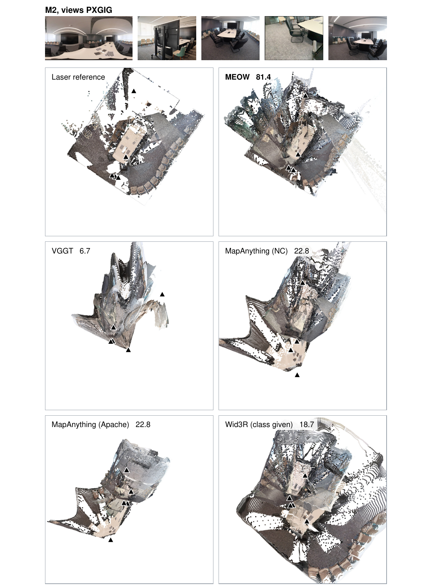
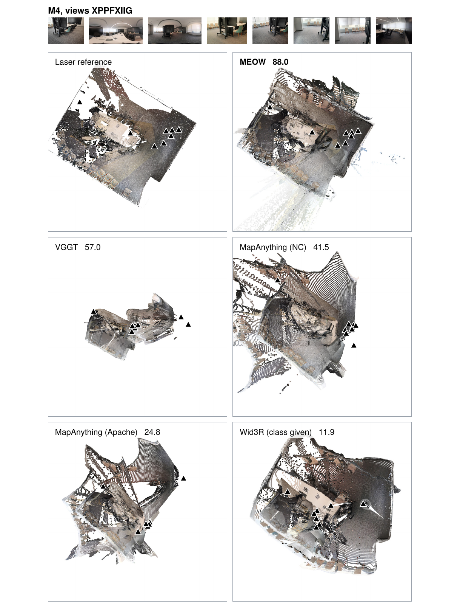
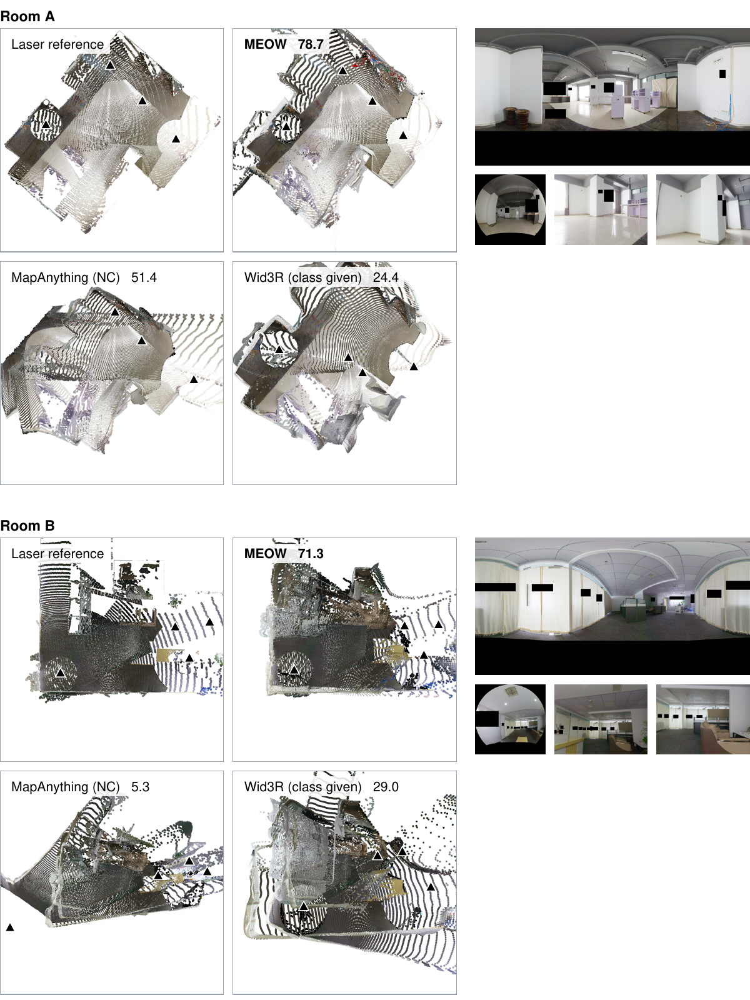
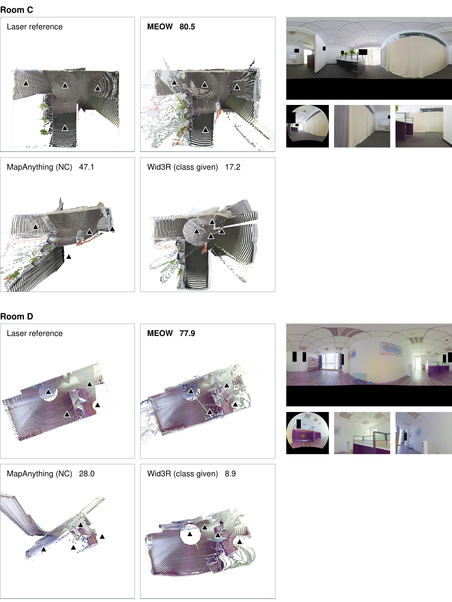

Loading reference…
Linked viewLaser scans and capture cameras
Office and four additional rooms
Real-camera office
1 / 5Loading laser reference…
Registered laser world · all test cameras
Drag to rotate · scroll to zoom · right-drag to pan
Reconstruction comparisons
Qualitative comparisons · click to enlarge




One similarity transform per tuple for display; no view is aligned separately. Reference geometry covers the input views.
Quantitative results
Real cameras and additional scenes
| Inputs | MEOW | VGGT | MapAnything (NC) | MapAnything (Apache) | Wid3R (camera class given) |
|---|---|---|---|---|---|
| Mixed-camera tuples | 70.5 | 29.9 | 26.6 | 17.0 | 9.2 |
| Same-camera tuples | 70.4 | 61.7 | 60.5 | 58.3 | 78.6 |
Tuples are weighted equally.
| Method | Mixed | Pinhole | Fisheye | Panorama |
|---|---|---|---|---|
| MEOW | 79.5 | 83.1 | 79.4 | 80.8 |
| MapAnything (NC) | 33.4 | 92.1 | 61.4 | 2.6 |
| Wid3R (camera class given) | 21.8 | 60.5 | 81.0 | 91.9 |
| Method | Mixed | Panorama | DSLR fisheye | iPhone |
|---|---|---|---|---|
| MEOW | 84.4 | 94.4 | 89.1 | 83.9 |
| VGGT | 7.5 | 0.0 | 73.8 | 94.5 |
| MapAnything (NC) | 22.1 | 0.0 | 78.5 | 94.5 |
| MapAnything (Apache) | 8.2 | 3.1 | 83.0 | 40.5 |
| Wid3R (camera class given) | 11.8 | 97.9 | 99.7 | 51.1 |
Interactive reconstructions
Select a dataset, tuple and methods.
One Sim(3) per tuple, for display only
Drag to orbit · scroll or pinch to zoom · right-drag to pan. Focus a panel for WASD movement and Q/E vertical movement.
Density changes the preview only; scores stay fixed. Fit all shown includes outliers.
PanoramaPerspectiveFisheyeReference poseMarkers indicate camera types; fields of view are schematic.
Ordered inputs
Click an input to look from its reference camera.Tuple measurements
Values supplied with this tuple.| Method | AUC@30 | ||||
|---|---|---|---|---|---|
| Loading measurements… | |||||
All four tracks in this room
Averages over the room’s tuples; separate from the single tuple displayed above.| Method | Mixed AUC@30 (%) | Perspective | Fisheye | Panorama |
|---|